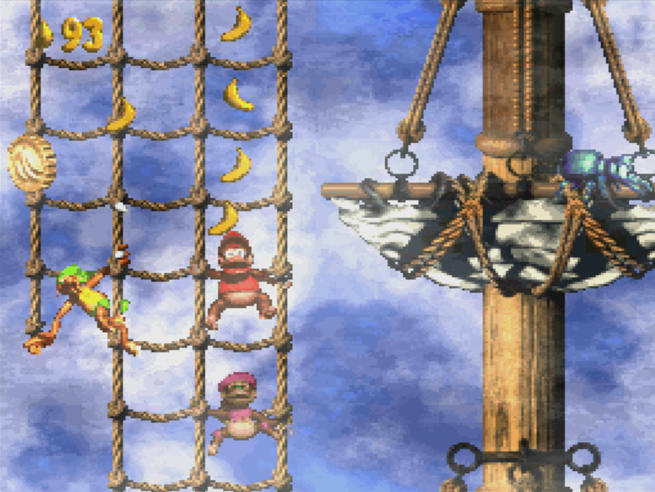
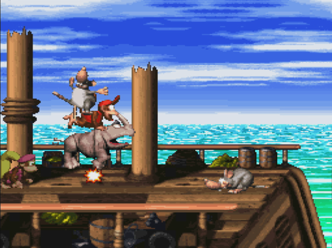
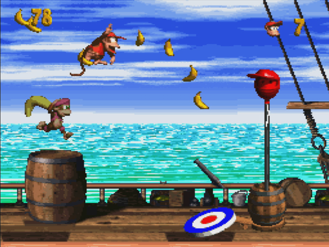

Donkey Kong Country 2: Diddy’s Kong Quest (1995): Um Clássico da Era 16-bits
Donkey Kong Country 2: Diddy’s Kong Quest é um exemplo brilhante do auge dos jogos de plataforma 2D durante a era 16-bits. Com seus gráficos revolucionários, trilha sonora inesquecível e design de níveis engenhoso, ele se destaca como um dos jogos mais influentes e amados de todos os tempos. Este clássico da Rare não só elevou os padrões para jogos de plataforma, mas também deixou um legado duradouro que continua a inspirar desenvolvedores e encantar jogadores em todo o mundo.
Lançamento: 20 de novembro de 1995
Plataforma: Super Nintendo Entertainment System (SNES)
Desenvolvimento e Inovação:
- Equipe de Desenvolvimento: Donkey Kong Country 2: Diddy’s Kong Quest foi desenvolvido pela Rare, uma empresa britânica de desenvolvimento de jogos, em colaboração com a Nintendo. A equipe de desenvolvimento foi liderada por Tim Stamper e Chris Stamper, com a produção executiva de Shigeru Miyamoto.
- Gráficos Pré-renderizados: Assim como seu antecessor, Donkey Kong Country 2 utilizou gráficos pré-renderizados para criar personagens e cenários detalhados e visualmente impressionantes. Essa técnica envolvia a criação de modelos 3D em computadores avançados e a conversão dessas imagens em sprites bidimensionais.
Gráficos e Som:
- Visual: O jogo foi elogiado por seus gráficos impressionantes, que utilizavam uma paleta de cores vibrantes e detalhamento minucioso. Os ambientes variavam de florestas e navios piratas a vulcões e montanhas nevadas, cada um com seu próprio estilo visual único.
- Trilha Sonora: Composta por David Wise, a trilha sonora de Donkey Kong Country 2 é amplamente considerada uma das melhores em jogos de plataforma. As músicas são atmosféricas e emocionantes, variando de temas alegres e aventureiros a faixas mais sombrias e introspectivas.
Mecânicas de Jogo:
- Personagens Jogáveis: O jogo centra-se em Diddy Kong e sua namorada Dixie Kong. Cada personagem tem habilidades únicas: Diddy é rápido e ágil, enquanto Dixie pode usar seu cabelo para planar, permitindo um controle mais preciso em saltos longos.
- Design de Níveis: Donkey Kong Country 2 possui um design de níveis complexo e desafiador, com muitos segredos escondidos, colecionáveis e áreas bônus. Os níveis são variados e apresentam diferentes mecânicas de jogabilidade, mantendo a experiência fresca e emocionante.
- Colecionáveis: Os jogadores podem coletar bananas, moedas de Kremkoin e moedas DK, que são usadas para desbloquear níveis bônus e outros conteúdos secretos.
História:
- Enredo: A história começa após os eventos do primeiro jogo. Donkey Kong foi sequestrado pelo vilão King K. Rool, agora sob o nome de Kaptain K. Rool. Cabe a Diddy e Dixie resgatá-lo, atravessando a perigosa Ilha Crocodile e enfrentando diversos inimigos e desafios ao longo do caminho.
Recepção e Impacto:
- Sucesso Comercial: Donkey Kong Country 2 vendeu mais de 4,37 milhões de cópias em todo o mundo, sendo um dos jogos mais vendidos do SNES.
- Crítica: O jogo recebeu aclamação universal por sua jogabilidade refinada, gráficos impressionantes e trilha sonora memorável. É frequentemente citado como um dos melhores jogos de plataforma de todos os tempos.
- Legado: Donkey Kong Country 2 consolidou a série como uma das mais importantes da Nintendo e da Rare. Ele influenciou muitos jogos de plataforma subsequentes e continua a ser celebrado por sua qualidade e inovação.
Níveis Memoráveis:
- Gangplank Galleon: O primeiro mundo, ambientado em um navio pirata, que estabelece o tema de pirataria do jogo.
- Crocodile Cauldron: Um mundo de lava com níveis desafiadores que exigem precisão e habilidade.
- Krazy Kremland: Um parque de diversões com níveis variados, incluindo uma emocionante montanha-russa.
- Gloomy Gulch: Um mundo assombrado com atmosferas sombrias e níveis desafiadores.


